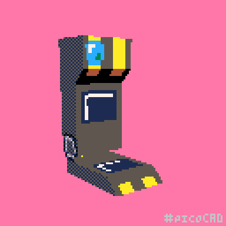

Starter Planet Online Pokedex
Click here to access it
Due to a cascade of events involving a re-opened Ultra Wormhole, a lost Hoopa, and Arceus literally sending more afterwards for biodiversity reasons, there is now a permanant population of Pokemon on Starter Planet.
Charles alchemized a pokedex that has the ability to gather data on a pokemon automatically from various sources. After a lopsided online poll, it was dubbed the UltraDex. It has an ultra ball pattern! of course we're gonna call it the ultradex! Like, I know, it could have been called the Hyperdex or the cooldex or whatever, but bluh.
Anyhow, there's a selection of processed data that's been placed online here for easy reference. Its likely going to have locational specific data rather than commonly found data, as the latter can be found in a lot of other places.